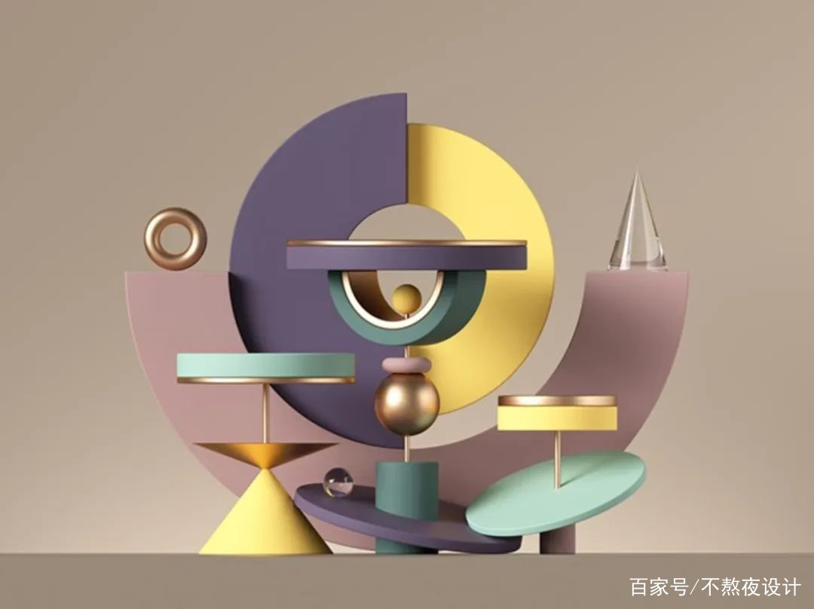
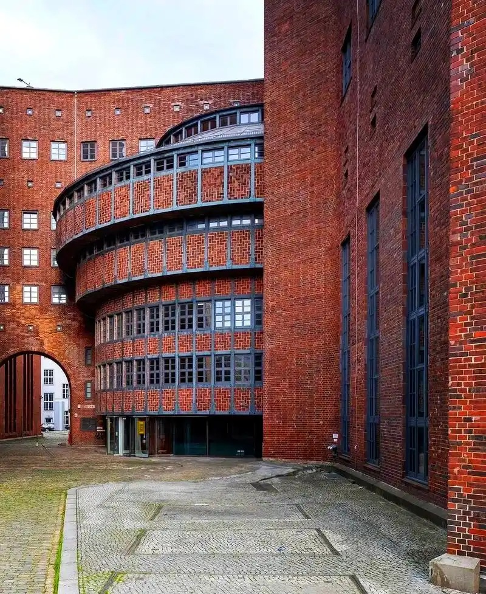
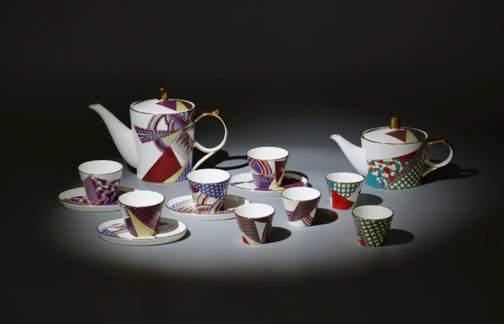

我就读于浙江万里学院中德品牌学部艺术与科技中德2+2项目24A2班，采用中德联合办学培养模式。在校期间同步学习国内艺术设计专业课程与德国前沿品牌设计、数字艺术相关内容。
专业融合视觉设计、数字媒体、品牌策划、交互艺术、跨文化设计等多领域知识，兼顾艺术审美与商业品牌落地能力。未来将完成国内两年基础专业学习后，前往德国合作院校继续深造，完成剩余阶段学业，获取中德双方学位证书。

视觉设计是本专业的核心方向之一，涵盖品牌标识设计、视觉传达系统构建、包装设计等内容。课程体系注重培养学生从概念到落地的全流程品牌设计能力，使学生能够独立完成品牌视觉全案。
数字媒体方向结合当代技术与艺术表达，探索数字环境下的创意呈现方式。学习内容包括数字影像、界面设计、用户体验等，为学生进入数字创意产业奠定基础。

前两年在浙江万里学院完成专业基础课程学习，系统掌握设计理论与实践技能。后两年前往德国合作院校继续深造，接触欧洲先进的品牌设计理念与方法论。
完成全部学业后，学生将同时获得中方与德方院校的学位证书，具备国际认可的专业资质，为未来职业发展提供更广阔的选择空间。

本专业致力于培养具有国际视野的复合型创意设计人才。通过系统的课程训练与实践项目，学生能够在视觉传达、品牌建设、数字内容创作等多个领域建立专业能力，适应当代创意产业的多元需求。